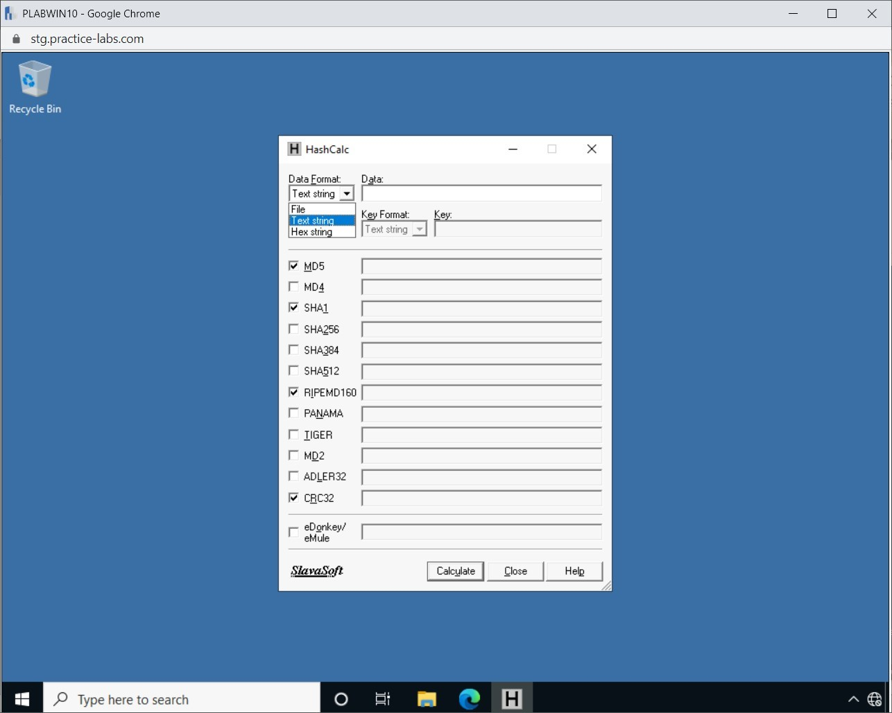
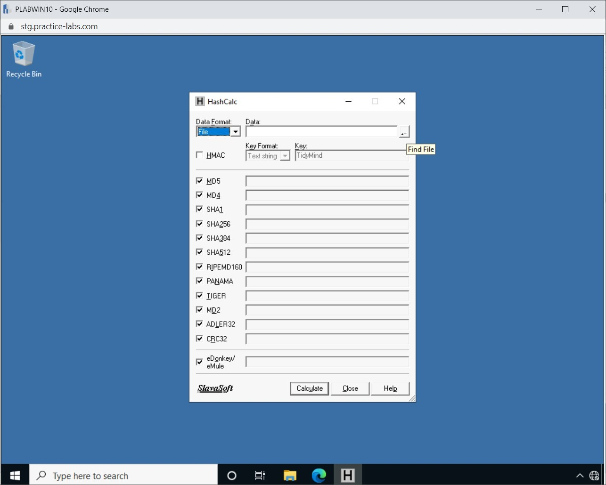

Introduction
bb1840e4-5425-49a3-9d75-477b8f016ff8
Welcome to the Cryptographic Basic Concepts Practice Lab. In this module, you will be provided with the instructions and devices needed to develop your hands-on skills.
dc640c20-9434-45ea-b7c2-6d4d6a196bfc
Learning Outcomes
In this module, you will complete the following exercises:
- Exercise 1 - Knowing the Cryptographic Concepts
- Exercise 2 - Implementing Cryptography
- Exercise 3 - Using Steganography
After completing this module, you should be able to:
- Encrypt Data using CryptoDemo
- Decrypt data using CryptoDemo
- Key Values
- Perform Hashing
- Use HashCalc
- Hide Documents in a Graphic
- Use Steghide to Hide Data in an Image
After completing this module, you should have further knowledge of:
- Symmetric vs. Asymmetric
- Digital Signatures
- Key Length
- Hashing
- Key stretching
- Salting
- Key Exchange
- Elliptical Curve Cryptography
- Perfect Forward Secrecy
- Quantum
- Communications
- Blockchain
- Cipher Suites
- Lightweight Cryptography
- Homomorphic Encryption
- Limitations
Exam Objectives
The following exam objectives are covered in this lab:
2.8 Summarize the basics of cryptographic concepts.
- Digital Signatures
- Key Length
- Key stretching
- Salting
- Hashing
- Key Exchange
- Elliptical Curve Cryptography
- Perfect Forward Secrecy
- Quantum
- Post-quantum
- Ephemeral
- Modes of Operation
- Blockchain
- Cipher Suites
- Symmetric Vs. Asymmetric
- Lightweight Cryptography
- Steganography
- Homomorphic Encryption
- Common Use Cases
- Limitations
Note: Our main
focus is to cover the practical, hands-on aspects of the exam
objectives. We recommend referring to course material or a search engine
to research theoretical topics in more detail.
Lab Duration
It will take approximately 1 hour to complete this lab.
c6fa62a3-1a00-4052-8104-258e8cbaa187
Help and Support
For more information on using Practice Labs, please see our Help and Support page. You can also raise a technical support ticket from this page.
Click Next to view the Lab topology used in this module.
d2c53300-f951-45a9-9aa4-3d4ecae69e11
Lab Topology
During your session, you will have access to the following lab configuration.

Depending on the exercises, you may or may not use all
of the devices, but they are shown here in the layout to get an overall
understanding of the topology of the lab.
- PLABDC01 - (Windows Server 2019 - Domain Controller)
- PLABDM01 - (Windows Server 2019 - Domain Member)
- PLABWIN10 - (Windows 10 - Domain Member Workstation)
- PLABKALI - (Kali Linux 2019.4 - Standalone Server)
Click Next to proceed to the first exercise.
<
Home |
README >
CompTIA Security+ Practice Labs
Exercise 1 - Knowing the Cryptographic Concepts
Cryptography is a method of converting readable text
into something that no one can understand, except the person who knows
how it has been converted. Different cryptography algorithms help you
turn readable text or information into a scrambled piece with the help
of keys. Depending on the algorithm that you use, you will either use
one or two keys. The person who needs to know what is inside the
scrambled text needs to have the key.
Cryptographic tools are used to generate and confirm
the integrity of information or data and be used confidentially to
protect from the unauthorized viewing of materials.
This greatly assists with the security of information
you are receiving from the source location. Further, with hashing, you
can confirm, for example, a program you have downloaded has not been
modified in some manner by checking its hash value produced by the
author with your value.
Learning Outcomes
After completing this exercise, you should have further knowledge of:
- Symmetric vs. Asymmetric
- Digital Signatures
- Key Length
- Hashing
- Key stretching
- Salting
- Key Exchange
- Elliptical Curve Cryptography
- Task 9 - Perfect Forward Secrecy
- Quantum
- Communications
- Blockchain
- Cipher Suites
- Lightweight Cryptography
- Homomorphic Encryption
- Computing
- Modes of operation
- Common use cases
- Limitations
Your Devices
This exercise contains supporting materials for Security+.

Symmetric vs. Asymmetric
Encryption uses keys or passwords to protect data
from unauthorized users and can either be symmetric or asymmetric. In
symmetric encryption, a single key is used for encryption and decryption
of data. One example of symmetric encryption is a password.
Asymmetric encryption uses a pair of keys called a
public/private key pair. This type of key is typically issued by a
Certification Authority (CA) server that can be either internal or
external to an organization. A public key is used to encrypt a message
and the private key to decrypt it. For example, the HTTPS protocol uses
asymmetric encryption. However, it is interesting to know that it uses
asymmetric encryption, encrypts the symmetric key, which is used to
encrypt the session data.
In this task, you will learn to encrypt data using symmetric encryption.
Digital Signatures
Digital signatures are used for signing emails to
effectively place a unique signature on an Email to verify the sender.
The act of signing is effectively a digital signature. The idea is to
have the message readable to everyone. Still, the clever part is
checking whether the message has been changed by someone other than the
author of the Email, thereby helping to thwart man-in-the-middle attacks
and maintain message integrity.
To be able to create a digital signature, you need to
use your private key. For example, after receiving the message with the
digital signature, John should use the sender's public key to decrypt
the message. You cannot create a digital signature with your own or the
recipient’s public key. Only John can use his private key to create a
digital signature. You cannot use someone else’s private key.
Key Length
When using an encryption algorithm, it is designed to
use a specific key size, the number of used bits. In the simplest
terms, a key length is the number of combinations that it would require
before you can break the encryption. For example, let’s assume that the
key length is 1 bit. This can either be 0 or 1. It is pretty easy to
assume. Now, if the key size is 64, more bits are being used. It would
not be easy for anyone to assume the information in 64 bits.
Let’s take a look at some of the key-encryption algorithms and their key lengths.
- Data Encryption Standard (DES) - 56-bit
- Triple-DES (3DES) - 168-bit
- Advanced Encryption Standard (AES) - 256-bit
- Twofish - 128, 192, 256-bit
Hashing
Passwords are generally stored in plaintext, which
means that they are readable by anyone who gets hold of them. To protect
passwords, they must be encrypted or hashed. You can encrypt passwords
or hash them. Passwords are encrypted using symmetric encryption, which
uses a key. When the password is encrypted, a key is generated. Anyone
with the key can decrypt the password to obtain the actual value.
Encryption is a reversible method.
Hashing is not a reversible process, and once a hash
is generated, it cannot be reversed. When a user creates a password, the
username is appended to the password, and a hash value is generated.
Hashing a value is used to map data of any size and
provide a method for verifying the integrity and authenticity of data
and their authors.
Key Stretching
It is known that hashes cannot be reversed. Once you
create a hash, you cannot reverse it to get the original value out of
it. However, even though hashes cannot be reversed, they can be cracked
using various methods. It could be either be a dictionary or brute-force
attack to crack these hashes. It could also be a rainbow table that
contains the pre-calculated hashes. Another problem can be a weak hash.
For example, if you generate a hash out of the word Passw0rd, it could be easily cracked.
When you have a weak password, you can use utilities
like bcrypt and perform key stretching. Key stretching uses
CPU-intensive hash functions, which takes a weak key and turns it into a
secure key. The number of resources required to break this key would be
much higher and takes a longer time. Using key stretching, the length
of the password key can be stretched to 128-bits.
Salting
Implementing salting can help protect the passwords
in a database. In salting, the length of the passwords is increased by
adding more bits to it. The real password is then difficult to guess. A
hash is generated completely different from the hash that would have
been generated only with the password.
When you have weak passwords being used in an
application, you can use the salting method. For example, you can add
random salt to each password and generate a completely different hash
for each password. A hash is generated in the following manner after
salt is added:
Passw0rd + cd6PehSMfV22Cd = d1d3ec2e6f20fd420d50e2642992841d8338a314b8ea157c9e18477aaef226ab
In this given example, the first word is the actual
password. The second after appearing after the plus sign is the salt,
and then the third word appearing after the equal sign is the hash.
Consider a scenario in which several users use the same password, Passw0rd.
If you add the same salt, the same hash would be generated. This does
not solve any problem because if one hash is cracked, the attacker has
then cracked all other hashes without putting in any effort.
To prevent this problem, the salt must be randomized
with the password. In this manner, even if users use the same password
because salt is different, a new and unique hash will be generated.
Key Exchange
Key exchange is any cryptographic method used to
share keys between two entities. For example, asymmetric encryption uses
the key exchange to share a symmetric key. The cryptographic protocol
then uses symmetric encryption to encrypt and decrypt data because
symmetric encryption is much more efficient.
Let’s look at how asymmetric encryption works and how asymmetric key is exchanged between two entities.
- A client initiates a session with a web server that
is configured with a certificate. For example, the client enters a URL,
https://www.practicelabs.com, in the web browser.
- The request is received by the web server, which
then sends its certificate to the client. It is important to note that
the certificate includes the public key of the webserver. Remember, it
is a pair of public and private keys. The private key is still with the
webserver and should never be shared.
- After receiving the certificate, the client first
creates a symmetric key. It then takes the public key from the
certificate and encrypts the symmetric key, which is then used to
encrypt the session.
- The client shares the encrypted symmetric key, which can also be called the session key.
- After receiving, the webserver decrypts the asymmetric key or the session key with its private key.
- Now, both the client and the webserver have the asymmetric or the session key, and they can establish a secure connection.
Elliptical Curve Cryptography
Elliptic Curve Cryptography or ECC is used
key-based methods to encrypt and decrypt data. It uses public and
private keys, which are used for encrypting and decrypting data. ECC is
mainly used in the context of traffic on the Internet.
ECC uses the mathematics of elliptic curves to
encrypt key pairs for public key encryption. In the elliptic curve,
certain points are plotted. Based on these points, the keys are
generated mathematically. Two key cryptography algorithms that use ECC
are Digital Signature Algorithm (DSA) and Elliptic Curve Diffie-Hellman
(ECDH).
ECC is based on a similar concept as RSA, which uses
prime numbers instead of elliptic curves. It is difficult to keep the
large key size in the mobile device. To tackle this problem, ECC uses
small but highly secure keys that are difficult to crack.
When compared with RSA, the key size is much smaller. For example, RSA has the following key sizes in bits:
- 1024
- 2048
- 3072
- 7680
- 15360
On the other hand, the key size in ECC is:
Perfect Forward Secrecy
Perfect Forward Secrecy is a cryptography method that
randomly generates the encryption keys for encrypting and decrypting
information. It uses asymmetric encryption. The key feature of Perfect
Forward Secrecy is that a random key is used with each transaction of
any kind. The benefit is that if one encryption key is stolen or lost,
the rest of the transactions are not tampered with.
Perfect Forward Secrecy works with messaging, web
pages, or even phone calls. For example, if one message is sent, it is
encrypted with random keys. The same concept works with phone calls and
webpages. Each time a call is initiated, it is encrypted with random
keys.
There is no fixed algorithm that is used in Perfect
Forward Secrecy. It can use a cryptographic algorithm to generate the
random keys and also ensures that once the keys are used, they are not
re-used.
Quantum
In simpler terms, cryptography is a method of
converting a piece of data into scrambled text that no one but the
person with the encryption key can read. For everyone else, the data has
no relevance or meaning. Quantum cryptography works on the same
principles but applies the principles of quantum mechanics, which
encrypts the data and sends it, so that alteration of it is not
possible.
Before understanding quantum cryptography, let’s look at some of the quantum principles:
- Particles, which form the universe, can exist in more than one place at a time.
- These particles can also exist in more than one state.
- Photons exist in a random quantum state.
- To measure a quantum property, you must either change it or disturb it.
- It is possible to copy some of a particle's quantum properties, but you cannot copy the entire particle.
Quantum cryptography works on these principles. Let’s understand this in detail with an example.
Using quantum cryptography, UserA sends information
in the form of polarized photons over a fiber cable. The information
being sent is for UserB. Another malicious user attempts to read the
photon over the fiber cable. When a photon is read, its state is
altered. This alters the encryption key state, which is now known to
both the users, UserA and UserB. UserA needs to send a new encryption
key to UserB to read the information.
Figure 1.1 Image showing the Quantum cryptographic process.
Communications
Several types of encryption can be secured alongside
the protection of data traversing from one location to another. Take the
example of a web server with a certificate, which helps encrypt and
guarantee a safe connection to a requesting client. Another example can
be E-mail communication, which can be encrypted with the S/MIME or PGP.
Secure/Multipurpose Internet Mail Extensions (S/MIME)
is a public encryption standard used to encrypt email messages. It uses
private and public keys for secure email communication.
PGP (Pretty Good Privacy) is an open-source
encryption method to secure messages sent over the internet. In addition
to securing messages, PGP can also be used to encrypt files and instant
messages. Encryption through PGP uses digital certificates, which
ensures that the encryption cannot be compromised.
When encryption is used with data that needs to
traverse from one location to another, the data's confidentiality and
integrity are maintained.
Blockchain
In a blockchain there are several blocks, each block
contains data. They are linked to each other to form a list, which is
referred to as a blockchain. Blockchain is a shared, distributed,
decentralized, and public ledger. This means that it is a ledger system
that is not controlled by a single entity. Take the example of a bank.
If you were to send money to your friend who has his account in the same
bank, you need to send it through the bank. Even if you transfer
through the website or a mobile app, the money is still be transferred
through the bank. Your and your friend’s account is updated at the
backend of the banking system. The bank, in this case, acts as a
mediator.
In the blockchain, there is no mediator. It is a
direct transaction between two entities. The information on this network
is stored in blocks, which contain the following types of information:
- Transaction details, such as timestamp and amount
- Individual information - the username
- Hash information - each block contains a unique hash
Public Ledgers
Continuing with the example of sending money to your
friend on the blockchain network; if your transaction is successful, it
will be recorded on public ledgers. It is important to note that even
though several transactions are taking place on the blockchain network,
only confirmed transactions are recorded. For example, if you initiate a
second transfer to your friend’s account but interrupt it in the
middle, this transaction is now incomplete. The public ledger does not
record this transaction.
This ledger is also called public because any system
participating in it has one copy of the ledger. However, each copy of
the public ledger is compared with the other copies. If one copy is
tampered with, then it is rejected and not included in the transaction.
Hashing plays a critical role in blockchains. Each
block has a hash that is also added to the next block as a reference.
For example, let’s assume that block1 has a hash of
aldfjadslfkjasdlfasdo. Block 2 would have this hash as a reference
point. It would have its own hash and then it would also have the
reference of the next block as a reference. Like this, all blocks keep
their own and adjacent blocks’ references. If any of the block is
tampered with, its hash changes and is not considered valid. Hashing
serves as a security method for securing the blocks in a blockchain.
Cipher Suites
Cipher suites are instruction sets that define how
information is secured while traversing through a network. Information
is secured using Transport Layer Security (TLS), which helps you
integrate HTTP security. Cipher suites can either be stream cipher or
block cipher.
Stream and block ciphers are symmetric, making them
use a single key to encrypt and decrypt information. To encrypt and
decrypt information, they both work in different ways:
- A block cipher encrypts information by dividing it
into blocks, which can be 64-bit or 128-bit. After the information is
divided into blocks, then each block is encrypted individually.
- On the other hand, the stream cipher does not use
the block concept. The stream cipher encrypts the bit or bytes streams.
If there is a continuous stream of data, then it should be secured using
the stream cipher. For example, when you have audio or video streaming
over a network or the Internet, it is in a continuous stream. A stream
cipher works well with such streams of data.
Lightweight Cryptography
When you use a typical cryptographic method, it
requires a certain computation power to process information in
encryption and decryption. However, traditional cryptographic methods
become a problem when using smaller devices, such as contactless smart
cards, sensors, IoT, and healthcare devices. These devices do not have
computation power equivalent or close to a normal system, such as a
desktop or a laptop, which uses 32-bit or 64-bit microcontrollers. These
devices rather use 8-bit, 16-bit and sometimes, a 32-bit
microcontroller.
Lightweight cryptography solves the problem with such
devices because it has a smaller footprint and does not require a high
computational power amount. For smaller devices, you have to balance out
between security and performance along with device power. Lightweight
cryptography strikes an equal balance for the use of computational power
and security. It helps to secure these devices against various attacks,
such as single-key, key-recovery, or weak-keys.
Two examples of lightweight cryptography are:
- TWINE - block cipher
- OTR - Authenticated Encryption method
As of the release of this title, both are in trial phases.
Homomorphic Encryption
Without decrypting encrypted data, you simply cannot view its contents. When you decrypt data, it is vulnerable to attack.
Homomorphic encryption is a method that helps you
analyze data without decrypting it. This means that you can analyze it,
but other users or even an attacker cannot access the data. Homomorphic
encryption, just like any other encryption method, encrypts data in the
same manner - using a public key. When the data is encrypted, you need
to use an algebraic system that performs certain encrypted data
functions. The functions are then run on the encrypted data. After the
functions are complete, you use the required private key to access the
data that has been decrypted. However, for the other users, the data is
still encrypted.
Limitations
The advantages of cryptography are clear - it helps
maintain the confidentiality and integrity of information. However,
along with the advantages, there are also disadvantages:
Entropy
Entropy is the base of all cryptographic functions.
In the simplest terms, entropy is the method of providing random input
in a system that needs to run the cryptographic algorithms. By default, a
system on its own cannot perform entropy. The operating system, such as
Linux, can perform entropy functions. When a user is clicking or typing
on a system, random inputs are collected and added to the entropy pool.
Such events, user typing or clicking or other system events, are
random, and it is difficult to predict them in advance and hence, the
server as random data in the entropy pool.
With the lack of entropy or sufficient entropy, data is vulnerable as it can be predicted even if there is encryption applied.
Predictability
When you apply the encryption of a piece of data, its
output is in the form of encrypted data. However, even the encrypted
data is only secure if it cannot be predicted. The data can be truly
secure if it has been encrypted with a high level of randomness.
If you use a cryptographic algorithm that does not
use the source randomness, its output is likely to be something that can
be predicted.
7429868b-128c-4069-95a9-7246a6a9e5a3
<
Home |
README >
CompTIA Security+ Practice Labs
Exercise 2 - Implementing Cryptography
Cryptographic tools are used to generate and confirm
the integrity of information or data and be used confidentially to
protect from the unauthorized viewing of materials.
This greatly assists with the security of information
you are receiving from the source location. Further, with hashing, you
can confirm, for example, a program you have downloaded has not been
modified in some manner by checking its hash value produced by the
author with your value.
In this exercise, you will learn to encrypt data. You will also learn about hashing.
Learning Outcomes
After completing this exercise, you should be able to:
- Encrypt Data using CryptoDemo
- Decrypt Data using CryptoDemo
- Key Values
- Perform Hashing
- Use HashCalc
Your Devices
You will be using the following devices in this lab. Please power these on now.
- PLABDC01 - (Windows Server 2019 - Domain Controller)
- PLABWIN10 - (Windows 10 - Domain Member Workstation)
- PLABKALI - (Kali Linux 2019.4 - Standalone Server)

Task 1 - Encrypt Data using CryptoDemo
Even though there are various tools available to
encrypt information, CryptoDemo is a small tool that can help you
encrypt and hash information. It contains two tabs - one for hashing and
one for encryption. On the encryption tab, you can choose different
algorithms and encrypt the information. On the hashing tab, you can
generate hashes for files, hex values, and text strings.
In this task, you will learn to encrypt data using CryptoDemo.
Step 1
Ensure you have powered the required devices and connect to PLABWIN10.
The desktop is displayed.
 Figure 2.1. Screenshot of PLABWIN10: Showing the desktop of PLABWIN10.
Figure 2.1. Screenshot of PLABWIN10: Showing the desktop of PLABWIN10.
Step 2
Click Start, navigate to the Cryptography Demonstration and click on the CryptoDemo1.0 program to start.
Figure
2.2 Screenshot of PLABWIN10: Clicking the Start menu, expanding
Cryptography Demonstration, and then clicking the CryptoDemo option.
Step 3
The CryptoDemo 1.0 dialog box is displayed.
Figure 2.3 Screenshot of PLABWIN10: Showing the CryptoDemo dialog box.
Step 4
You will now apply the encryption algorithm 3DES to see the output and recognize what such an output generates in terms of values.
In the Encryption Algorithm drop-down, ensure that Triple DES Encryption (3DES) is selected.
Figure 2.4 Screenshot of PLABWIN10: Showing the 3DES algorithm selected on the Encryption tab in the CryptoDemo dialog box.
Step 5
Type the following into the Key field:
Practice-Labs.com
Type the following text in the Data field to be encrypted:
Welcome to Practice Labs!
Figure 2.5 Screenshot of PLABWIN10: Entering the text in the Key and Data text boxes.
Step 6
Now, click the Encrypt button to see the result of the encryption, and a result will be displayed in the Encrypted Data field.
Figure 2.6 Screenshot of PLABWIN10: Showing the Encrypt button highlighted in the CryptoDemo 1.0 dialog box.
Step 7
The ciphertext is displayed in the Encrypted Data
text box. The text should be different from the string that you entered,
and it should be unreadable.
Note: You can press the Encrypt button
as many time as you like, and you will see different results of output
data; this is one of the most important conceptions behind encrypting
text.
Figure 2.7 Screenshot of PLABWIN10: Showing the output in the Encrypted Data text box.
Keep the CryptoDemo 1.0 dialog box open.
Task 2 - Decrypt Data using CryptoDemo
After you have encrypted a piece of data, which was
in the form of a text string, you can now decrypt it from the encrypted
data. By decrypting the encrypted content, you will verify that it is
the same as the source data, which was encrypted.
In this task, you will learn to decrypt the encrypted data in CryptoDemo.
Step 1
Connect to PLABWIN10. Ensure that CryptoDemo 1.0 dialog box is opened. Select and delete the text in the Data text box.
Figure 2.8 Screenshot of PLABWIN10: Showing the selected text for deletion in the Data text box.
Step 2
Press the Decrypt button to see the result back in the Data field.
Figure 2.9 Screenshot of PLABWIN10: Showing the Decrypt button highlighted in the CryptoDemo 1.0 dialog box.
Step 3
You will have the same original text decrypted from the data.
Note: You can now try the other algorithm types of DES, RC2, and RC4 to see the output.
Figure 2.10 Screenshot of PLABWIN10: Showing the output in the Data text box in the CryptoDemo 1.0 dialog box.
Step 4
Delete the last character from the Encrypted Data.
Figure 2.11 Screenshot of PLABWIN10: Deleting the last character in the Encrypted Data text box.
Step 5
Click Decrypt.
Figure 2.12 Screenshot of PLABWIN10: Showing the Decrypt button highlighted in the CryptoDemo 1.0 dialog box.
Step 6
Notice that the original value is no longer generated. Rather an error message is displayed.
Figure 2.13 Screenshot of PLABWIN10: Showing an error message in the Data textbox on the CryptoDemo 1.0 dialog box.
Task 3 - Key Values
In general, mixing up as many variables as possible
with long string lengths produces a strong key to encrypt or hash
against. However, you will use options presented by Random Key and Time
Key. With the Random Key option, it generates a Base64 random key. As
the name suggests, when you generate a Time Key, it uses time as the
key.
In the previous task, you had input your string to
generate an encryption key. However, this is a poorly secured key. A
better option would be to generate a random or time value key, which is a
lot more secure.
In this task, you will generate the key values.
Step 1
Connect to PLABWIN10. Ensure that the CryptoDemo 1.0 dialog box is open.
Figure 2.14 Screenshot of PLABWIN10: Showing an error message in the Data textbox on the CryptoDemo 1.0 dialog box.
Step 2
Select and delete the contents in the Encrypted Data text box. Ensure that you have Practice-Labs.com entered in the Key text box.
Figure 2.15 Screenshot of PLABWIN10: Showing the selected text for deletion in the Encrypted Data text box.
Step 3
Click the Random Key button to see what key you are presented with.
Note: It’s
random, so your key should not match the images; neither will your time
values. You will get different results in your lab environment.
Figure 2.16 Screenshot of PLABWIN10: Showing the Random Key button highlighted in the CryptoDemo 1.0 dialog box.
Step 4
Notice that a random key appears in place of the text in the Key text box.
Again, hit the Encrypt button to see the ciphertext generated using this type of key.
Figure
2.17 Screenshot of PLABWIN10: Showing a random key in the Key text box
and showing the Encrypt button highlighted in the CryptoDemo 1.0 dialog
box.
Step 5
Notice that a random key is now encrypted. The encrypted key appears in the Encrypted Data text box.
Figure 2.18 Screenshot of PLABWIN10: Showing the encrypted text in the Encrypted Data text box in the CryptoDemo 1.0 dialog box.
Step 6
Now, select and delete the encrypted data again in the Encrypted Data text box.
Figure
2.19 Screenshot of PLABWIN10: Showing the encrypted data highlighted in
the Encrypted Data text box in the CryptoDemo 1.0 dialog box.
Step 7
Click the Time Key button.
Figure 2.20 Screenshot of PLABWIN10: Showing the Time Key button highlighted in the CryptoDemo 1.0 dialog box.
Step 8
Notice that in the Key text box, date and time appear.
Again, click the Encrypt button and see the values generated.
Figure
2.21 Screenshot of PLABWIN10: Showing the date and time in the Key text
box and the Encrypt button highlighted in the CryptoDemo 1.0 dialog
box.
Step 9
Once more, you see another output that differs from the first result.
Figure 2.22 Screenshot of PLABWIN10: Showing the encrypted text in the Encrypted Data text box in the CryptoDemo 1.0 dialog box.
Task 4 - Perform Hashing
Hashing a value is used to map data of any size and
provide a method for verifying the integrity and authenticity of data
and their authors. The CryptoDemo tool can create hashes. You will now
use the same tool to see hash results.
In this task, you will learn to creates hashes using CryptoDemo.
Step 1
Connect to PLABWIN10. Ensure that the CryptoDemo 1.0 dialog box is open.
Figure 2.23 Screenshot of PLABWIN10: Showing the CryptoDemo 1.0 dialog box with encrypted text in the Encrypted Data text box.
Step 2
Click on the Hashing tab. Notice that the Hash Algorithm is set to MD5.
Figure 2.24 Screenshot of PLABWIN10: Showing the Hashing tab with the Hashing Algorithm set as the MD5 hashing algorithm.
Step 3
Within the top text box, type the following:
Congratulations!
Click Get Hash.
Figure 2.25 Screenshot of PLABWIN10: Showing the text in the text box and Get Hash button highlighted.
Step 4
A hash is generated.
Figure 2.26 Screenshot of PLABWIN10: Showing the generated hash in the bottom text box.
Step 5
Once again, click on the Get Hash button. Notice that you still get the same value. Unlike encryption, a hash always remains static and does not change.
Figure 2.27 Screenshot of PLABWIN10: Showing the Get Hash button highlighted and the hash in the bottom text box.
Step 6
From the Hash Algorithm drop-down, click on one of the other types such as SHA1 and then press the Get Hash button.
Figure 2.28 Screenshot of PLABWIN10: Showing the Hash Algorithm as SHA1 hashing algorithm and the Get Hash button highlighted.
Step 7
You will now see a different result for the SHA1 algorithm.
Note: You can generate hashes from different algorithms provided in the Hash Algorithm drop-down.
Figure 2.29 Screenshot of PLABWIN10: Showing the generated hash in the bottom text box.
Exit the program when finished.
Task 5 - Use HashCalc
Different algorithms generate different hashes.
HashCalc helps you generate hashes using 13 different algorithms with a
click of a button. You can look at different hashes generated from
algorithms and perform a direct comparison. HashCalc can compute message
digests, checksums, and HMACs for different input types, such as files,
text, and hex strings.
In this task, you will learn to use HashCalc.
Step 1
Connect to PLABWIN10. Ensure that you are on the desktop.
Figure 2.30 Screenshot of PLABWIN10: Showing the desktop of PLABWIN10.
Step 2
Click Start, click HashCalc and then click HashCalc.
 Figure 2.31 Screenshot of PLABWIN10: Showing the HashCalc option selected in the Start menu.
Figure 2.31 Screenshot of PLABWIN10: Showing the HashCalc option selected in the Start menu.
Step 3
The HashCalc dialog box is displayed.
Click the Data Format drop-down and select the Text String.
Figure
2.32 Screenshot of PLABWIN10: Showing the Text string option selected
from the Data Format drop-down in the HashCalc dialog box.
Step 4
Enter the following text in the Data text box:
Welcome to PLABWIN10!
After this, make sure all the tick boxes are confirmed for all the hashing algorithms except for HMAC, which should be left empty.
Figure 2.33 Screenshot of PLABWIN10: Showing the entered text string in the Data text box and all options selected except HMAC.
Step 5
Click Calculate to see the calculated hashes.
 Figure 2.34 Screenshot of PLABWIN10: Showing the Calculate button highlighted in the HashCalc dialog box.
Figure 2.34 Screenshot of PLABWIN10: Showing the Calculate button highlighted in the HashCalc dialog box.
Step 6
Notice that the hashes are now calculated for the text string.
Figure 2.35 Screenshot of PLABWIN10: Showing the calculated hashes for selected algorithms in the HashCalc dialog box.
Step 7
Now, select the HMAC checkbox. Notice that the hashes for the remaining algorithms disappear automatically.
 Figure 2.36 Screenshot of PLABWIN10: Showing the HMAC option and other algorithms selected in the HashCalc dialog box.
Figure 2.36 Screenshot of PLABWIN10: Showing the HMAC option and other algorithms selected in the HashCalc dialog box.
Step 8
With HMAC, you can edit the Key format to allow Text String or Hex String. For this task, you are going to uses the default select, which is Text String.
For the Key-Value, type the following Key:
TidyMind
Note: Make sure there is still text in the Data Field.
Welcome to PLABWIN10!
Click Calculate.
Figure
2.37 Screenshot of PLABWIN10: Showing the text string entered in the
Data and Key text boxes and Calculate button selected.
Step 9
Remember, these hashes were made with the specific key entered, and usually, this would be a secret key.
Figure 2.38 Screenshot of PLABWIN10: Showing the generated hashes for the selected algorithms in the HashCalc dialog box.
Step 10
You can now change the Data Format to Hex String and try that out.
Deselect the HMAC checkbox.
Type the following value into the Data field.
0000ff
Click Calculate.
Note: 0000ff is the Hex Value for the color blue.
Figure 2.39 Screenshot of PLABWIN10: Showing Hex String in the Data Format drop-down and the Calculate button selected.
Step 11
Finally, you will load a file to HashCalc to be evaluated. From the Data Format drop-down, select File.
Then, next to the Data text box, click the Find File (…) button.
Figure
2.40 Screenshot of PLABWIN10: Showing the File option selected in the
Data Format drop-down and Find File button selected.
Step 12
The Find dialog box is displayed. Navigate to the Downloads folder and select nmap-7.80-setup, and click Open.
Figure 2.41 Screenshot of PLABWIN10: Showing a file selected in the Find dialog box and Open button selected.
Step 13
Notice that the path of the file is now populated in the Data text box. Click Calculate.
Alert: Again, make sure the tick boxes have been ticked EXCEPT for the HMAC
Figure 2.42 Screenshot of PLABWIN10: Showing the file's path in the Data text box and the Calculate button highlighted.
Step 14
After a few seconds, the hashes for the selected file are displayed.
Figure 2.43 Screenshot of PLABWIN10: Showing the calculated hashes for the selected algorithms.
a5adbee1-b3d4-422f-907b-2999d763f275
Close the HashCalc dialog box.
<
Home |
README >
CompTIA Security+ Practice Labs
Exercise 3 - Using Steganography
Steganography is the process of hiding or covering a
file inside of another file. It is mainly intended to hide a secret
message in a plain message or a graphics file. Steganography is not a
new technology, and has been around for thousands of years and was used
by Greeks and Romans. In recent times, the methods of steganography have
changed, but its intent remains the same.
A basic steganography tool encodes information within
another file, typically a media file such as a picture or audio/video
file. A typical technique is to encode information in the least
significant bit of the image, video, or audio data. This does not
materially affect the picture, video, or sound and does not alter the
file header (though it can change the file size).
In this exercise, you will hide documents in a graphics file.
Learning Outcomes
After completing this exercise, you should be able to:
- Hide Documents in a Graphic
- Use Steghide to Hide Data in an Image
Your Devices
You will be using the following devices in this lab. Please power these on now.
- PLABDC01 - (Windows Server 2019 - Domain Controller)
- PLABWIN10 - (Windows 10 - Domain Member Workstation)
- PLABKALI - (Kali Linux 2019.4 - Standalone Server)

Task 1 - Hide Documents in a Graphic
Without prior context, it is extremely difficult to
detect steganography. In this example, you will hide the contents of a
folder in a graphics file.
There are various tools that you can use. One such
tool is Gargoyle Investigator Forensic Pro. However, you can perform the
same task with a simple compression program like WinZip, Winrar, or
7-zip. This task will use 7-zip for folder steganography.
To use folder steganography, perform the following steps:
Step 1
Ensure you have powered on all the devices listed in the introduction and connect to PLABWIN10. Click the File Explorer icon from the taskbar.
Figure 3.1 Screenshot of PLABWIN10: Clicking the File Explorer icon on the taskbar.
Step 2
In the left-hand pane, expand This PC and select Local Disk (C:).
 Figure 3.2 Screenshot of PLABWIN10: Showing the Local Disk (C:) selected in the left-hand pane of File Explorer.
Figure 3.2 Screenshot of PLABWIN10: Showing the Local Disk (C:) selected in the left-hand pane of File Explorer.
Step 3
Click the Home tab and then click New folder.
 Figure 3.3 Screenshot of PLABWIN10: Showing the New Folder button highlighted in the Home tab.
Figure 3.3 Screenshot of PLABWIN10: Showing the New Folder button highlighted in the Home tab.
Step 4
Type the following name for the new folder:
PLAB
Press Enter. Alternatively, click anywhere outside the text box where you are typing the name.
 Figure 3.4 Screenshot of PLABWIN10: Entering the name as PLAB for the new folder.
Figure 3.4 Screenshot of PLABWIN10: Entering the name as PLAB for the new folder.
Step 5
Double-click the PLAB folder. You are now inside the PLAB folder. Note that the folder is currently empty.
Figure 3.5 Screenshot of PLABWIN10: Navigating inside the PLAB folder and showing it as empty.
Step 6
You need to create two new text files.
To create a text file, right-click on the white area and select New and then select Text Document.
Figure
3.6 Screenshot of PLABWIN10: Showing the context menu inside the PLAB
folder with New ( Text Document options highlighted to create a text
document.
Step 7
In the text box, type the name as:
PLAB1
Press Enter.
Similarly, create another text file with the name:
PLAB2
Press Enter.
For this task, two text files, PLAB1, and PLAB2 are created.
Figure 3.7 Screenshot of PLABWIN10: Showing newly created two text files in the PLAB folder.
Step 8
Select both the files. Right-click on the selection, select 7-zip and then select Add to “PLAB.zip”.
Figure
3.8 Screenshot of PLABWIN10: Showing both the text files selected with a
context menu with 7-Zip and Add to “PLAB.zip” options selected.
Step 9
The PLAB.zip file is now created.
Figure 3.9 Screenshot of PLABWIN10: Showing the newly created PLAB.zip file.
Step 10
Now, you will need a graphics file that you need to copy to the PLAB folder. For the sake of this lab, a graphics file has been downloaded from Google. You can download any graphics file of your choice into the PLAB folder. For this demonstration, you have a graphics file named PLAB.png located in the Local Disk (C:) drive.
Figure 3.10 Screenshot of PLABWIN10: Showing a newly added graphics file in the PLAB folder.
Step 11
In the address bar of File Explorer, type the following command:
cmd
Press Enter.
 Figure 3.11 Screenshot of PLABWIN10: Showing the cmd command written in the File Explorer’s address bar.
Figure 3.11 Screenshot of PLABWIN10: Showing the cmd command written in the File Explorer’s address bar.
Step 12
The command prompt window is displayed. You are already in the C:\PLAB directory.
Figure 3.12 Screenshot of PLABWIN10: Showing the opened command prompt window.
Step 13
Type the following command:
copy /b “PLAB.png”+PLAB.zip PLAB-new.png
Press Enter.
Figure 3.13 Screenshot of PLABWIN10: Showing the typed command to hide the text files in the graphic file.
Step 14
The command is successfully executed.
Close the command prompt window.
Figure 3.14 Screenshot of PLABWIN10: Showing the command's successful outcome and closing the command prompt window.
Step 15
In File Explorer, ensure that you are in the C:\PLAB folder.
A new graphics file named PLAB-new.png is now created. The file size is the same as PLAB.png.
Figure 3.15 Screenshot of PLABWIN10: Showing the sizes of the PLAB and PLAB graphics files.
Step 16
Double-click PLAB.png and then PLAB-new.png. Note that both the graphics files display the same content. No one will ever come to know that the PLAB-new.png file has hidden content behind it.
Close both the files and minimize the File Explorer window.
Figure 3.16 Screenshot of PLABWIN10: Showing the PLAB-new.png and PLAB.png files.
Step 17
In the Type here to search text box, type the following:
7-zip File Manager
Press Enter.
From the search result, select 7-Zip File Manager.
Figure 3.17 Screenshot of PLABWIN10: Showing the search bar with the results and selection of 7-Zip File Manager.
Step 18
The 7-Zip File Manager window is displayed.
Figure 3.18 Screenshot of PLABWIN10: Showing the 7-Zip File Manager window.
Step 19
Navigate to the C:\PLAB folder and double-click the PLAB-new.png file.
Figure
3.19 Screenshot of PLABWIN10: Opening the C:\PLAB folder inside the
File Manager and showing the PLAB-new.png file selected.
Step 20
Note that both the text files are displayed.
Figure 3.20 Screenshot of PLABWIN10: Showing two text files hidden within the PLAB-new.jpg.
Close all open windows.
Task 2 - Use Steghide to Hide Data in an Image
Steghide is a tool that needs to be installed on a
Linux system, such as Kali Linux. It can hide data in an image or audio
file. It can also encrypt the embedded data in an image or audio file.
It can generate the output to JPEG, BMP, WAV, and AU files.
In this task, you will use Steghide. To do this, perform the following steps:
Step 1
Connect to PLABKALI. In the Enter your username text box, type the following:
root
In the Enter your password text box, type the following:
Passw0rd
Click Log In or press Enter.
 Figure 3.21 Screenshot of PLABKALI: Entering the user credentials and then pressing Enter.
Figure 3.21 Screenshot of PLABKALI: Entering the user credentials and then pressing Enter.
Step 2
After login, you are on the desktop of PLABKALI. In the menu bar, click Terminal Emulator.
Figure 3.22 Screenshot of PLABKALI: Showing the Terminal Emulator button highlighted.
Step 3
The terminal window is displayed. You need first to install the Steghide tool. Type the following command:
apt-get install steghide -y
Press Enter.
Figure 3.23 Screenshot of PLABKALI: Entering the command to install steghide in the terminal window.
Step 4
The Steghide installation process starts. The installation process will take a few minutes to complete.
Figure 3.24 Screenshot of PLABKALI: Showing the installation progress of the steghide tool.
Step 5
The installation completes with an error, which you can ignore.
Figure 3.25 Screenshot of PLABKALI: Showing the installation completion of steghide.
Step 6
Clear the screen by entering the following command:
clear
To view the Steghide help, type the following command:
steghide --help
Press Enter.
 Figure 3.26 Screenshot of PLABKALI: Entering the command to view the steghide help.
Figure 3.26 Screenshot of PLABKALI: Entering the command to view the steghide help.
Step 7
The help parameter displays the list of parameters that can be used with the steghide command.
Figure 3.27 Screenshot of PLABKALI: Showing the output of the help parameter with the steghide command.
Step 8
Clear the screen by entering the following command:
clear
First, create a new directory named plab. To do this, type the following command:
mkdir plab
Press Enter.
Figure 3.28 Screenshot of PLABKALI: Creating a new directory with the mkdir command.
Step 9
Let’s navigate inside the plab directory. To do this, type the following command:
cd plab
Press Enter.
Figure 3.29 Screenshot of PLABKALI: Navigating to the plab directory with the cd command.
Step 10
You are now inside the plab directory. You need to create a new text file named secret.txt. To do this, type the following command:
touch secret.txt
Press Enter.
Figure 3.30 Screenshot of PLABKALI: Creating a new text file with the touch command.
Step 11
Clear the screen by entering the following command:
clear
Let’s list the files in the plab directory. To do this, type the following command:
ls -l
Press Enter.
Figure 3.31 Screenshot of PLABKALI: Listing the files in the plab directory.
Step 12
Notice that the secret.txt file is now present in the plab directory.
 Figure 3.32 Screenshot of PLABKALI: Showing the secret.txt file in the plab directory.
Figure 3.32 Screenshot of PLABKALI: Showing the secret.txt file in the plab directory.
Step 13
Clear the screen by entering the following command:
clear
Now, you will need a graphics file that you need to copy to the plab directory. For the sake of this lab, a graphics file has been downloaded from Google or any other search engine. You can download any graphics file of your choice into the plab directory. For this demonstration, you have a graphics file named practice-labs.jpg.
After copying the file, verify that the file exists in the plab directory. To do this, type the following command:
ls -l
Press Enter. Notice that the index.jpeg file exists in the plab directory.
Figure 3.33 Screenshot of PLABKALI: Showing the text file and a graphic file in the plab directory
Step 14
You will now hide the secret.txt file in the index.jpeg file. To do this, type the following command:
Note: Two parameters are being used:
ef = is for the file that is being embedded.
cf = is for the file that will contain the embedded file
steghide embed -cf index.jpeg -ef secret.txt
Press Enter.
Figure 3.34 Screenshot of PLABKALI: Entering a command to hide the secret.txt file in the practice-labs.jpg file.
Step 15
You will be prompted to set a password. Type the following password:
Passw0rd
Press Enter.
When prompted to re-enter the password, type the following password:
Passw0rd
Press Enter.
Figure 3.35 Screenshot of PLABKALI: Entering and re-entering the password.
Step 16
Notice that the message states that the secret.txt file is now embedded in the index.jpeg file.
Figure 3.36 Screenshot of PLABKALI: Showing the message stating that the secret.txt file is embedded in the index.jpeg file.
Step 17
Clear the screen by entering the following command:
clear
For users, the index.jpeg file is a normal
graphic file. However, you know that it has a hidden file inside. To
extract the hidden file, type the following command:
steghide extract -sf index.jpeg
Press Enter.
Figure 3.37 Screenshot of PLABKALI: Entering the command to extract the file from the graphic file.
Step 18
Since there is password protection, you will be asked to enter the password. Type the following password:
Passw0rd
Press Enter.
Figure 3.38 Screenshot of PLABKALI: Entering the password to extract the file.
Step 19
After the password is verified, the file will extract. However, since the secret.txt file already exists in the plab directory,
you will be prompted to overwrite this file. In a real-world scenario,
this is unlikely to happen that you will be extracting the embedded file
in the same directory.
Press the y key.
Notice that the secret.txt is now extracted successfully.
 Figure 3.39 Screenshot of PLABKALI: Showing the extracted file.
80e3ace3-3818-477e-9d50-9fdfea66eb75
Figure 3.39 Screenshot of PLABKALI: Showing the extracted file.
80e3ace3-3818-477e-9d50-9fdfea66eb75
Close the terminal window.
d31298f5-3011-4089-bf06-fbf08c44a7f9
Keep all devices that you have powered on in their current state and proceed to the review section.
Review
Well done, you have completed the Cryptographic Basic Concepts Practice Lab.
c6e74811-6d1f-4779-94c2-34fcca239022
53201292-6b53-48ab-b033-7f7510bf2294
f53b2586-52a4-4876-93e9-ff461577e30e
fcd0fd9a-6acd-44ec-bed7-95743d4abaa3
7c4adecd-1888-4602-84c6-d7307d5c732a
bc9d7fb8-d18d-4614-a051-6848ce71f534
aaaaaaaa-1111-1111-1111-193f35a24fe3
Summary
You completed the following exercises:
- Exercise 1 - Knowing the Cryptographic Concepts
- Exercise 2 - Implementing Cryptography
- Exercise 3 - Using Steganography
You should now be able to:
- Encrypt Data using CryptoDemo
- Decrypt data using CryptoDemo
- Key Values
- Perform Hashing
- Use HashCalc
- Hide Documents in a Graphic
- Use Steghide to Hide Data in an Image
You should now have further knowledge of:
- Symmetric vs. Asymmetric
- Digital Signatures
- Key Length
- Hashing
- Key stretching
- Salting
- Key Exchange
- Elliptical Curve Cryptography
- Task 9 - Perfect Forward Secrecy
- Quantum
- Communications
- Blockchain
- Cipher Suites
- Lightweight Cryptography
- Homomorphic Encryption
- Computing
- Modes of operation
- Common use cases
- Limitations
Feedback
067744a4-4299-4662-b5be-04dbb636a007
Shutdown all virtual machines used in this lab. Alternatively, you can log out of the lab platform.